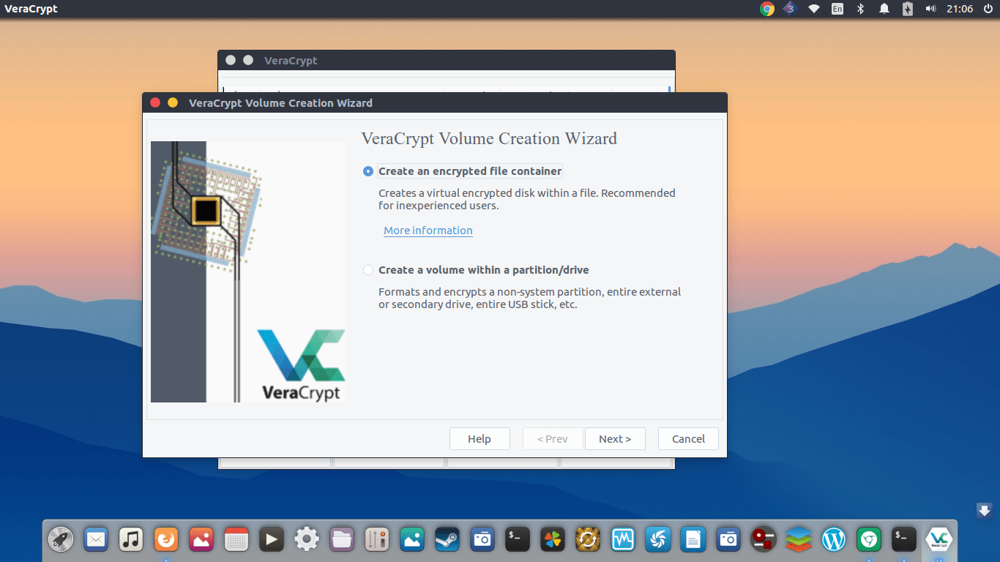
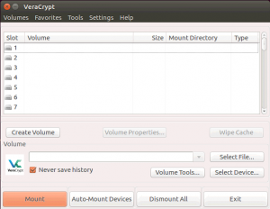

Как установить VeraCrypt на Ubuntu 16.04
Опубликовано : 19.03.2018 By cryptoparty

Установка VeraCrypt на Ubuntu 16.04
VeraCrypt – бесплатное программное обеспечение для шифрования диска с открытым исходным кодом, которое идет от TrueCrypt, которое стало недействительным с мая 2014 года.
VeraCrypt доступен для Linux, Mac OS, Windows, DragonFly BSD и Android.
Существует много причин использовать программное обеспечение для шифрования диска, такое как VeraCrypt.
Например, если вы используете облачное хранилище, вы можете зашифровать свои файлы перед их загрузкой, чтобы вы могли видеть только ваши файлы.
Во-первых, убедитесь, что вы обновили системный репозиторий, воспользовавшись следующей командой.
|
# apt-get update Get:1 http://security.ubuntu.com/ubuntu xenial-security InRelease [102 kB] . . Fetched 4,595 kB in 14s (314 kB/s) Reading package lists... Done |
И тогда вам нужно добавить репозиторий следующим образом:
|
# add-apt-repository ppa:unit193/encryption . . gpg: imported: 1 (RSA: 1) OK |
Теперь вы должны установить приложение Veracrypt, используя следующую команду.
|
# wget https://launchpadlibrarian.net/289850375/veracrypt-1.19-setup.tar.bz2 --2018-02-06 09:12:09-- https://launchpadlibrarian.net/289850375/veracrypt-1.19-setup.tar.bz2 Resolving launchpadlibrarian.net (launchpadlibrarian.net)... 91.189.89.229, 91.189.89.228 Connecting to launchpadlibrarian.net (launchpadlibrarian.net)|91.189.89.229|:443... connected. . . veracrypt-1.19-setup.tar.bz2.1 100%[=====================================================>] 16.33M 630KB/s in 59s 2018-02-06 09:13:10 (284 KB/s) - ‘veracrypt-1.19-setup.tar.bz2.1’ saved [17120742/17120742] |
Теперь вы можете просмотреть загруженный файл, используя следующую команду.
|
# ls veracrypt-1.19-setup.tar.bz2 |
|
# tar -xjvf veracrypt-1.19-setup.tar.bz2 veracrypt-1.19-setup-console-x64 veracrypt-1.19-setup-console-x86 veracrypt-1.19-setup-gui-x64 veracrypt-1.19-setup-gui-x86 |
После этого вам нужно выполнить файл, он установит приложение.
|
# ./veracrypt-1.19-setup-gui-x64 Verifying archive integrity... 100% All good. Uncompressing VeraCrypt 1.19 Installer 100% |
теперь откройте программный продукт
|
# veracrypt |
